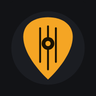
MARLI
Šta je novo u aplikaciji — sa snimcima ekrana i kratkim uputstvom.
What's new in the app — with screenshots and short how-tos.
1.79 Zahtevi i pregled za nastavnikaRequests and teacher overview 9. 11. 2026.
Za učenike: Pitaj nastavnika
For students: Ask your teacher
U „Od nastavnika“ su dva dugmeta: „Želim da naučim…“ i „Imaš li ovu pesmu?“. Upišeš naslov (izvođač i napomena nisu obavezni) i poruka ide nastavniku tvojom aplikacijom. U „Moji zahtevi“ vidiš stanje: poslato, stiglo ✓ (kad ti nastavnik pošalje pesmu) ili „nema je“.
In “From teacher” there are two buttons: “I want to learn…” and “Do you have this song?”. Enter the title (artist and note are optional) and the message goes to your teacher through your own app. “My requests” shows the status: sent, arrived ✓ (when the teacher sends the song) or “not available”.
Za nastavnike: pregled
For teachers: overview
Na računaru i velikom tabletu Učenici su pregled: koliko učenika i otvorenih zahteva, šta je poslato i stiglo ove nedelje, tabela svih učenika i lista zahteva. Pošalji pesmu otvara izbor sa već upisanim naslovom, Nemam javlja učeniku, Rešeno zatvara zahtev. „Treba pažnje“ ističe otvorene zahteve, tihe učenike i one bez kontakta. Na telefonu su zahtevi na stranici učenika.
On computers and large tablets Students is an overview: number of students and open requests, what was sent and received this week, a table of all students and the request list. Send song opens the picker with the title already filled in, Don’t have it tells the student, Done closes the request. “Needs attention” highlights open requests, quiet students and those without a contact. On phones requests are on the student’s page.
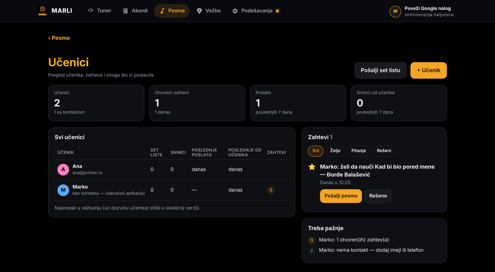
🔒 Pregled pokazuje samo ono što nastavnik već ima. Napredak u vežbanju (samo uz dozvolu učenika) stiže u sledećoj verziji.
🔒 The overview shows only what the teacher already has. Practice progress (only with the student’s permission) arrives in the next version.
1.78 Nastava: učeniciTeaching: students 9. 11. 2026.
Za nastavnike
For teachers
Podešavanja → Nastava → „Ja sam nastavnik“ (podrazumevano isključeno). Dodaj učenika (ime, po želji imejl ili telefon) i pošalji mu pozivnicu — otvara se tvoja aplikacija za poruke sa gotovim tekstom. Svaki učenik ima svoju stranicu sa set listama i snimcima. Posle snimanja u „Samo sviraj“ aplikacija pita „Za koga je snimak?“ (pamti poslednjeg). Set listu možeš dodeliti i poslati jednom ili više učenika — svako dobija svoju poruku, učenici ne vide jedni druge.
Settings → Teaching → “I’m a teacher” (off by default). Add a student (name, optionally email or phone) and send an invite — your messaging app opens with a ready text. Each student has a page with setlists and recordings. After recording in “Just play” the app asks “Who is this recording for?” (it remembers the last one). You can assign and send a setlist to one or more students — each gets their own message; students don’t see each other.
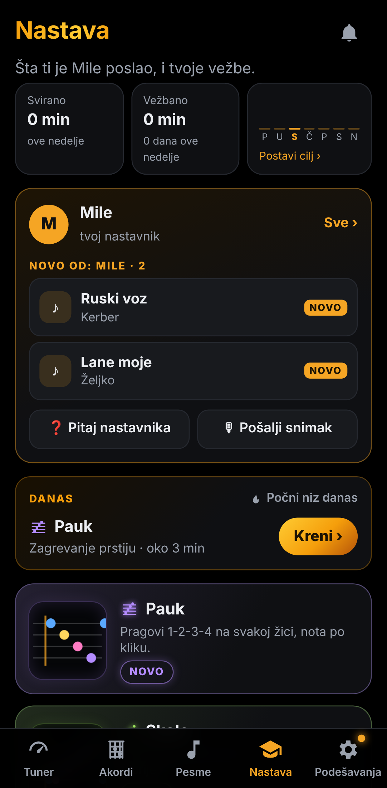
Za učenike
For students
Prihvati pozivnicu, pa je sve od nastavnika u „Od nastavnika“; kad nastavnik pošalje izmenjenu set listu, tvoja se samo osveži (bez duplikata). Snimak mu šalješ dugmetom „Pošalji nastavniku“ — kod njega odmah ide pod tvoje ime. Vezu možeš da prekineš kad hoćeš.
Accept the invite, and everything from your teacher is in “From teacher”; when the teacher sends an updated setlist, yours just updates (no duplicates). Send a recording with “Send to teacher” — it goes straight under your name on their side. You can disconnect any time.
🔒 Biblioteke se nikad ne dele; razmenjuje se samo ono što neko namerno pošalje. Podaci o učenicima ostaju samo kod nastavnika. MARLI sam nikome ne šalje poruke.
🔒 Libraries are never shared; only what someone deliberately sends is exchanged. Student data stays only with the teacher. MARLI itself never sends messages to anyone.
1.77 Nov izgled na računaruNew look on computers 9. 11. 2026.
Meni gore, širi sadržaj
Menu at the top, wider content
Na računaru je meni sada gore: logo levo, stranice u sredini, a desno tvoj Google nalog i stanje sinhronizacije (dodir otvara podešavanja naloga). Vežbe: „Danas“ je veliki blok, pored njega nedelja, a igre su velike pločice sa pregledom. Podešavanje igre je u dve kolone, a Počni je uvek na dnu ekrana, uz kratak pregled izabranog (npr. „Em – G · Na 2 otkucaja · Normalno · 60 BPM“). Na telefonu se ništa ne menja.
On a computer the menu is now at the top: logo on the left, pages in the middle, and on the right your Google account and sync status (tap to open account settings). Practice: “Today” is a big block with the week next to it, and games are large tiles with a preview. Game setup is in two columns, and Start is always at the bottom of the screen with a short summary of your choices (e.g. “Em – G · Every 2 beats · Normal · 60 BPM”). Nothing changes on phones.
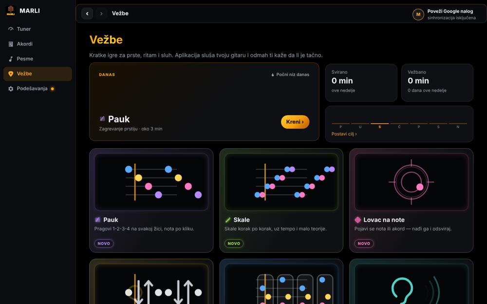
1.76 Pošalji utisakSend feedback 9. 11. 2026.
Javi mi šta misliš
Tell me what you think
Podešavanja → Pošalji utisak: izaberi Nešto ne radi, Ideja ili Sviđa mi se i napiši par reči. Uz poruku ide tvoj imejl (da mogu da ti odgovorim) i — ako ih ne isključiš — dijagnostika: ekran, verzija, uređaj i izveštaj o greškama. Bez pesama i ključeva. Bez mreže poruka sačeka i pošalje se sama.
Settings → Send feedback: pick Something’s wrong, Idea or I like it and write a few words. Your email goes with it (so I can reply) and — unless you turn them off — diagnostics: screen, version, device and an error report. No songs or keys. Offline, the message waits and is sent by itself.
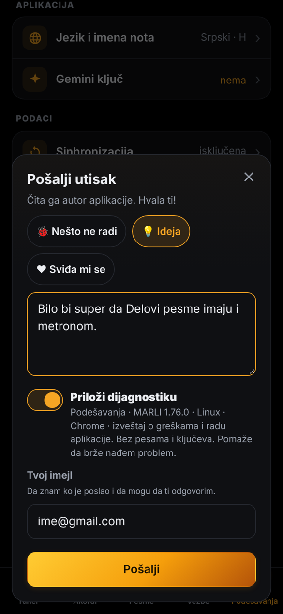
Pošalji dijagnostiku
Send diagnostics
Ako se nešto zaglavi: Podešavanja → Dijagnostika → Pošalji dijagnostiku — jedan dodir umesto kopiranja izveštaja.
If something gets stuck: Settings → Diagnostics → Send diagnostics — one tap instead of copying the report.
Retko — najviše dva puta, ikad — aplikacija posle vežbe pita „Kako ti se čini…?“ sa 👍 / 👎.
Rarely — at most twice, ever — the app asks “How do you like…?” after practice, with 👍 / 👎.
1.75 Ime akorda na linijiChord name on the line 9. 11. 2026.
Uvek znaš koji akord sviraš
Always know which chord you play
U Promeni akorda, Delovima pesme i Ritmu (nivoi sa akordima) na vrhu vrata, tačno iznad žute linije, stoji ime akorda koji sviraš. Otkucaj pre promene pored njega se pojavi i sledeći (Em › G) — da se pripremiš na vreme. Brojevi i boje prstiju u blokovima ostaju kao pre. Pauk i Skale su bez promene.
In Chord switch, Song parts and Rhythm (levels with chords) the chord you play is named at the top of the neck, right above the yellow line. One beat before a change the next one appears next to it (Em › G) — so you get ready in time. Finger numbers and colors in the blocks stay as before. Spider and Scales are unchanged.
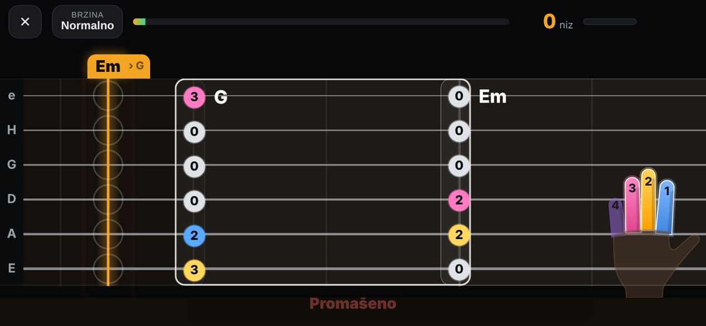
1.74 Dobrodošao nazad — jedna prijavaWelcome back — one sign-in 8. 11. 2026.
Nov telefon, računar ili obrisani podaci
New phone, computer or cleared data
Aplikacija odmah pita: Poveži Google nalog ili Prvi put sam ovde. Jedna prijava vraća sve — pesme, set liste, foldere, podešavanja, Vežbe i statistiku i Gemini ključ. Zatim sama pretraži tvoj Google Drive: ako postoji rezervna kopija novija od onoga što je stiglo (ili sinhronizacija nema ništa), ponudi je sa datumom („pre 2 h“) — jedan dodir i vraćena je. Kopije se uvek čuvaju u isti fajl, pa se Drive ne puni.
The app asks right away: Connect Google account or I’m new here. One sign-in brings everything back — songs, setlists, folders, settings, Practice and stats, and your Gemini key. Then it searches your Google Drive by itself: if there’s a backup newer than what arrived (or sync has nothing), it offers it with its age (“2 h ago”) — one tap and it’s restored. Backups always go into the same file, so Drive doesn’t fill up.
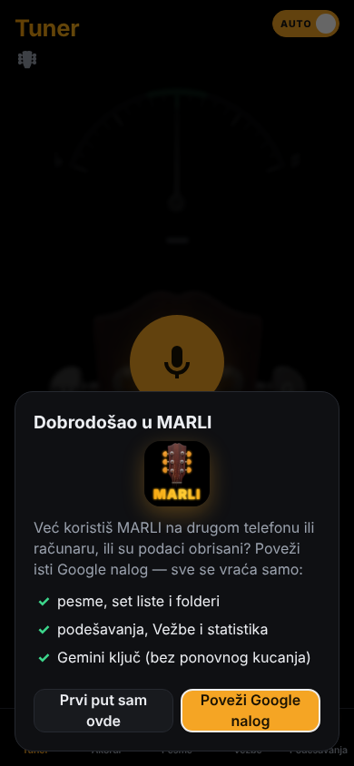
1.73 Koliko sviraš i vežbašHow much you play and practice 8. 11. 2026.
Vežbe: ova nedelja i moje pesme
Practice: this week and my songs
- Ova nedelja: koliko si svirao i vežbao (i u odnosu na prošlu nedelju), stubići po danu. Po želji nedeljni cilj — krug se puni.
- Moje pesme: za svaku pesmu svirano, koliko puta, vežbano i najbolji rezultat; poslednje svirane prve.
- Dugo nisi svirao: pesme koje nisi svirao više od mesec dana.
- Računa se samo aktivno vreme (dodir, skrol, Pusti, Uz video, runde vežbe) — pesma ostavljena otvorena ne broji sate. Telefon i računar se sabiraju preko sinhronizacije; sve je i u rezervnoj kopiji „Cela aplikacija“.
- This week: how much you played and practiced (compared with last week), bars per day. Optional weekly goal — the ring fills up.
- My songs: for each song played time, how many times, practiced time and best score; most recent first.
- Not played in a while: songs you haven’t played for over a month.
- Only active time counts (touch, scroll, Play, Play along, practice rounds) — a song left open doesn’t count hours. Phone and computer add up through sync; it’s all in the “Whole app” backup too.
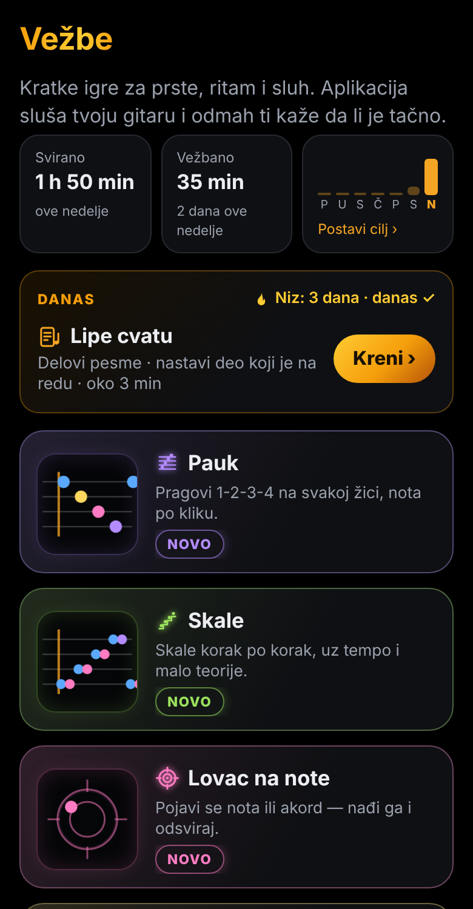
Sve o pesmi, spremnost set liste
Everything about a song, setlist readiness
Dodir na pesmu (u Vežbama ili red „Svirano · Vežbano“ na samoj pesmi): ukupno svirano i vežbano, delovi pesme i napredak tempa (npr. 80 → 100 BPM, cilj 112), pa „Vežbaj“ najslabiji deo. Na set listi: Spremno 6 od 9 i tačka uz svaku pesmu (zeleno spremna, zlatno u radu, sivo nevežbana).
Tap a song (in Practice, or the “Played · Practiced” line on the song itself): total played and practiced, the song’s parts and tempo progress (e.g. 80 → 100 BPM, target 112), then “Practice” the weakest part. On a setlist: Ready 6 of 9 and a dot next to each song (green ready, gold in progress, grey not practiced).
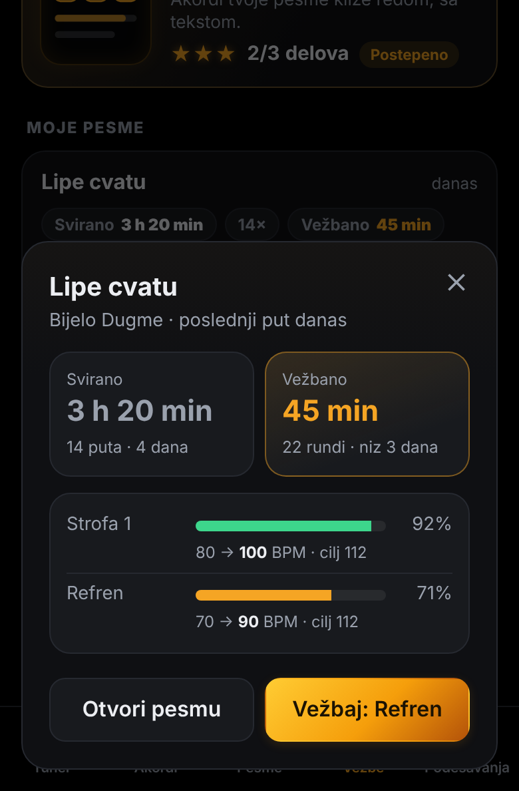
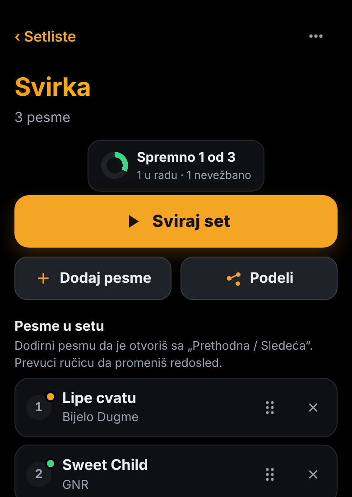
Nova ikonica na telefonu
The new icon on your phone
Ikonice imaju nova imena fajlova i aplikacija ima stalan identitet, pa ih Android i računar lakše prepoznaju kao promenu. Telefon menja ikonicu sam, obično za dan-dva. Ništa ne treba brisati ni ponovo instalirati.
The icons have new file names and the app has a fixed identity, so Android and computers pick up the change more easily. The phone updates the icon by itself, usually within a day or two. Nothing needs to be removed or reinstalled.
1.72 Nova PodešavanjaNew Settings 8. 11. 2026.
Kratak spisak, svaka celina svoja stranica
A short list, each section its own page
Na vrhu je stanje na jedan pogled: Google nalog, sinhronizacija, rezervna kopija i Gemini ključ. Ispod su grupe Sviranje, Aplikacija, Podaci i Više — sa ikonicama i trenutnom vrednošću desno (npr. „Standardno · 440“). Dodir otvara stranicu, ‹ ili dugme „nazad“ na telefonu vraća na spisak.
At the top: status at a glance — Google account, sync, backup and Gemini key. Below: Playing, App, Data and More — with icons and the current value on the right (e.g. “Standard · 440”). Tap to open a page; ‹ or the phone’s back button returns to the list.
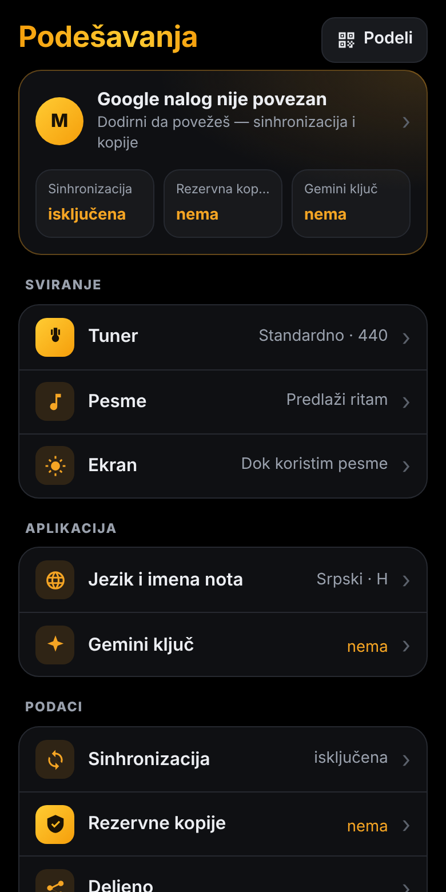
Na računaru: spisak levo, otvorena stranica desno.
On a computer: list on the left, the open page on the right.
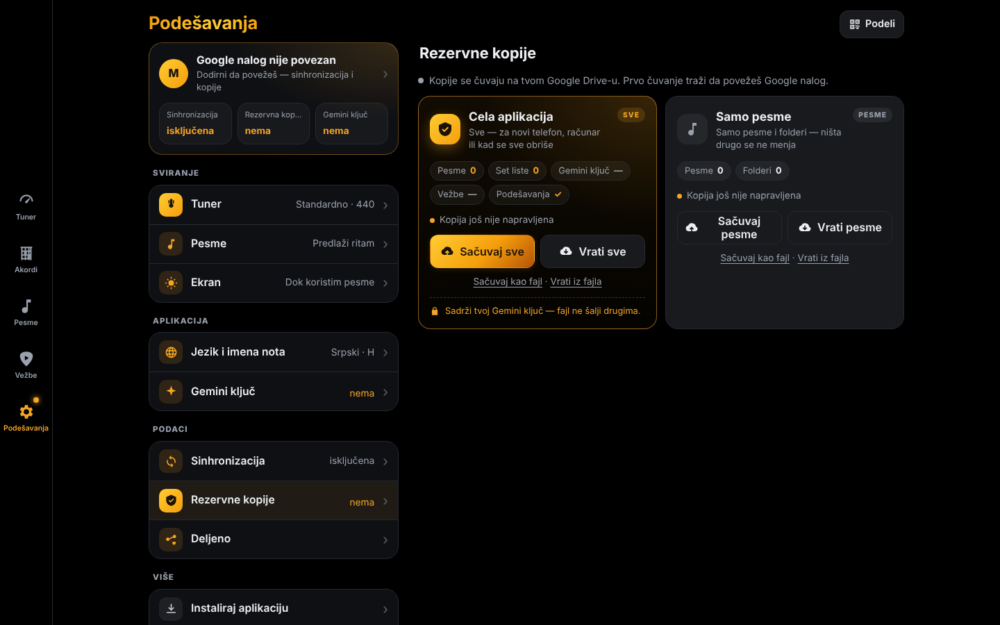
Gemini ključ se sklopi kad radi
The Gemini key folds away when it works
- Ključ radi — samo jedan red (…poslednja 4 znaka, kada je proveren) i dugmad Proveri / Promeni. Model, prenos na uređaje i brisanje su pod „Napredno“.
- Dnevni limit / Google zauzet — narandžasto, ostaje sklopljeno: ništa ne treba da radiš.
- Nema ključa ili ne radi — tek tada sve otvoreno: vraćanje sa Google naloga, polje i kratki koraci.
- Key works — just one line (…last 4 characters, when it was checked) and Check / Change. Model, sending to devices and delete are under “Advanced”.
- Daily limit / Google busy — orange, stays folded: nothing to do.
- No key or not working — only then everything is open: restore from Google account, the field and short steps.
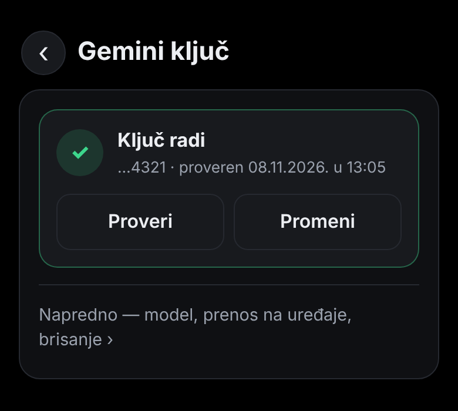
1.71 Rezervne kopije — jednostavnoBackups — simple 8. 11. 2026.
Dve kopije, dva dugmeta svaka
Two backups, two buttons each
Podešavanja → Rezervne kopije. Sinhronizacija drži uređaje usklađenim; rezervna kopija je snimak jednog trenutka za vraćanje kad nešto pođe naopako.
Settings → Backups. Sync keeps your devices matched; a backup is a snapshot of one moment for when something goes wrong.
- Cela aplikacija — sve: pesme, set liste, folderi, sva podešavanja, Gemini ključ, napredak i rezultati iz Vežbi, Skale, ritmovi, snimci. „Vrati celu aplikaciju“ zamenjuje sve kopijom. Ovaj fajl ne šalji drugima.
- Samo pesme — pesme i njihovi folderi. „Vrati pesme“ ne dira ništa drugo: Dodaj nove vraća pesme koje fale (i ranije obrisane), Zameni sve pesme ostavlja samo one iz kopije.
- Ništa ne biraš: „Sačuvaj“ i „Vrati“ same nađu kopiju na tvom Google Drive-u (ako nalog nije povezan, prvo ga povežu) i pre vraćanja pokažu šta je u njoj. Isto na telefonu i na računaru.
- Fajl na uređaju je dodatna mogućnost: „Sačuvaj kao fajl“ / „Vrati iz fajla“. Stare kopije i dalje mogu da se vrate.
- Whole app — everything: songs, setlists, folders, all settings, Gemini key, Practice progress and scores, Scales, rhythms, recordings. “Restore the whole app” replaces everything with the backup. Do not send this file to others.
- Songs only — songs and their folders. “Restore songs” touches nothing else: Add new brings back missing songs (deleted ones too), Replace all songs keeps only the ones in the backup.
- Nothing to pick: “Back up” and “Restore” find the backup on your Google Drive by themselves (connecting the account first if needed) and show what’s inside before restoring. Same on phone and computer.
- A file on the device is an extra option: “Save as a file” / “Restore from a file”. Older backups can still be restored.
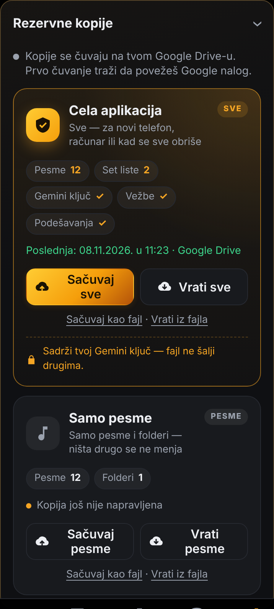
- Gemini ključ nestao? Vrati ključ sa Google naloga — jedan dodir u kartici Gemini ključ.
- Proveri ključ kaže šta je: dnevni besplatni limit (i kada stiže nov), Google zauzet ili loš ključ.
- MARLI uvod samo kad se aplikacija otvori — ne pri povlačenju nadole.
- Model „Automatski“ i „Prenesi ključ na moje uređaje“ uključeni podrazumevano.
- Gemini key gone? Restore key from Google account — one tap in the Gemini key card.
- Check key tells you what it is: daily free limit (and when it resets), Google busy, or a bad key.
- The MARLI intro only on opening the app — not on pull-to-refresh.
- “Automatic” model and “Send key to my devices” on by default.
1.70 MARLI na računaruMARLI on your computer 8. 11. 2026.
Poveži isti Google nalog — sve stiže samo
Connect the same Google account — everything arrives by itself
Na računaru otvori aplikaciju i poveži isti Google nalog kao na telefonu. Pesme, set liste, podešavanja i Gemini ključ stižu sami i ostaju usklađeni.
Open the app on your computer and connect the same Google account as on your phone. Songs, setlists, settings and your Gemini key arrive by themselves and stay in sync.
- Na računaru otvori bagaljivko.github.io/Gitara (Chrome ili Edge).
- Klikni Poveži Google nalog (pojavi se sam, ili dole levo).
- Sačekaj „Sve je stiglo ✓“.
- On your computer open bagaljivko.github.io/Gitara (Chrome or Edge).
- Click Connect Google account (it appears by itself, or bottom left).
- Wait for “Everything is here ✓”.
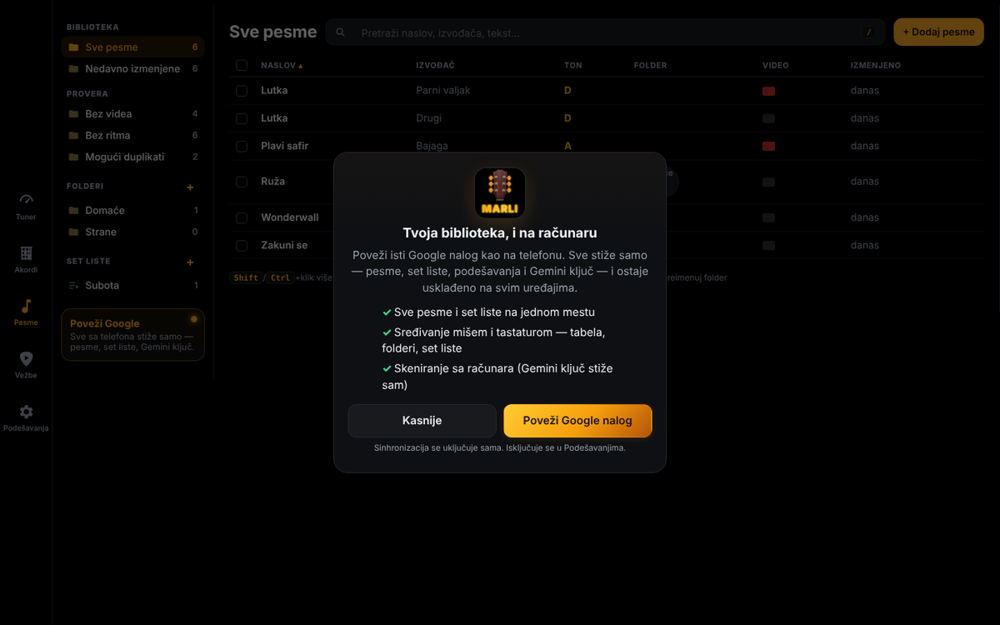
Biblioteka na računaru
Library on your computer
Na širokom ekranu „Pesme“ postaje upravljač biblioteke: levo folderi i set liste, u sredini tabela, desno otvorena pesma.
On a wide screen “Songs” becomes a library manager: folders and setlists on the left, a table in the middle, the open song on the right.
- Shift/Ctrl + klik — više pesama; traka sa radnjama: premesti u folder, dodaj u set listu, nova set lista od izabranih, promeni ton, obriši.
- Prevuci pesme na folder ili set listu levo.
- E — brzo uređivanje (naslov, izvođač, kapo, BPM, YouTube link, folderi).
- F2 ili dupli klik — preimenuj folder; desni klik — meni.
- Provera: „Bez videa“, „Bez ritma“, „Mogući duplikati“.
- Shift/Ctrl + click — many songs; action bar: move to folder, add to setlist, new setlist from selection, change key, delete.
- Drag songs onto a folder or setlist on the left.
- E — quick edit (title, artist, capo, BPM, YouTube link, folders).
- F2 or double click — rename a folder; right click — menu.
- Check: “No video”, “No rhythm”, “Possible duplicates”.
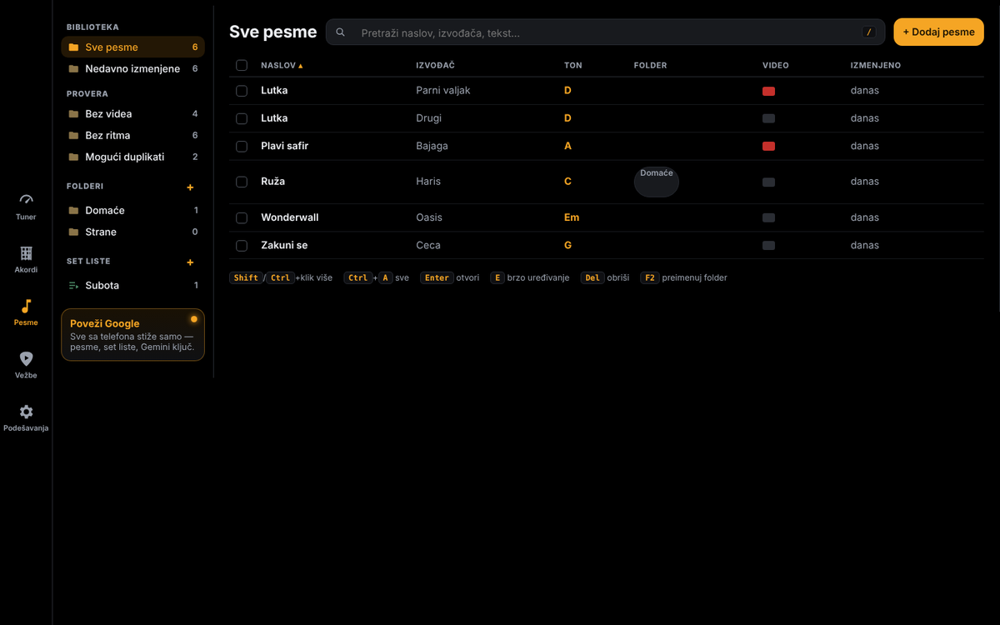
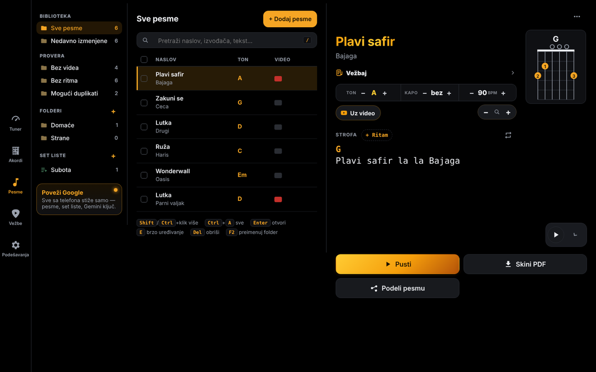
Više PDF-ova odjednom
Many PDFs at once
Prevuci ili izaberi više PDF-ova. PDF sa pravim tekstom postaje pesma odmah, bez AI. Skenirani PDF ide preko besplatnog Gemini-ja — pre početka vidiš koliko; ako se dnevni limit potroši, ostatak čeka i nastavlja se sam (najkasnije sutra).
Drag in or choose several PDFs. A PDF with real text becomes a song right away, no AI. Scanned PDFs go through free Gemini — you see how many before starting; if the daily limit runs out, the rest wait and continue by themselves (tomorrow at the latest).
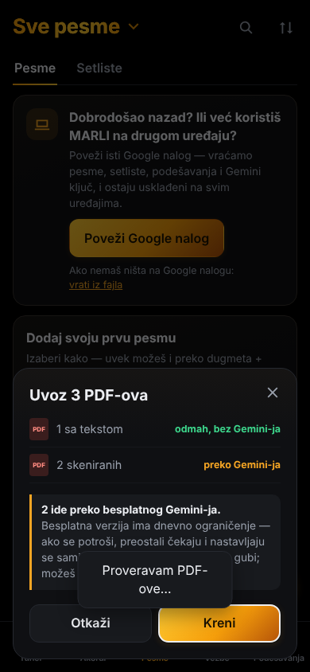
Dobrodošao nazad — oporavak posle brisanja podataka
Welcome back — recovery after clearing data
Ako se podaci pregledača obrišu (ili je telefon nov), aplikacija nudi „Dobrodošao nazad?“: poveži isti Google nalog i sve se vraća — i Gemini ključ. „Vrati rezervnu kopiju“ prvo sama traži kopiju na Google Drive-u.
If the browser data is cleared (or the phone is new), the app offers “Welcome back?”: connect the same Google account and everything comes back — including the Gemini key. “Restore a backup” first looks for the backup on Google Drive by itself.
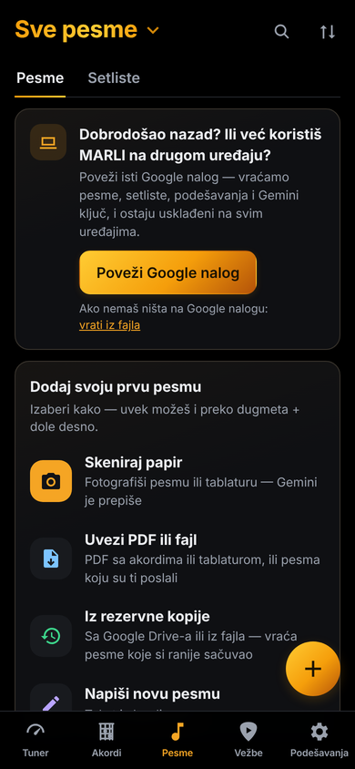
- Povezivanje Google naloga uključuje sinhronizaciju na svakom uređaju (isključuje se u Podešavanjima).
- Na telefonu: „MARLI i na računaru“ u Podešavanjima i u „Podeli MARLI“.
- „Šta je novo“ u Podešavanja → O aplikaciji (zlatna tačka posle ažuriranja).
- Set lista: Alt+↑/↓ pomera pesmu, Del je izbacuje.
- Connecting your Google account turns on sync on every device (you can turn it off in Settings).
- On the phone: “MARLI on your computer too” in Settings and in “Share MARLI”.
- “What's new” in Settings → About (gold dot after an update).
- Setlist: Alt+↑/↓ moves a song, Del removes it.
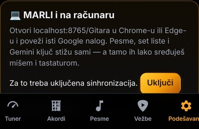
1.69 Gitara je sada MARLIGitara is now MARLI
Novo ime, nova ikonica (glava gitare iz tunera) i uvodna animacija. Adresa, pesme i podešavanja su ostali isti.
New name, new icon (the headstock from the tuner) and intro. The address, songs and settings stay the same.
Ništa ne treba brisati ni ponovo instalirati — aplikacija se ažurira sama.
Nothing needs to be removed or reinstalled — the app updates by itself.